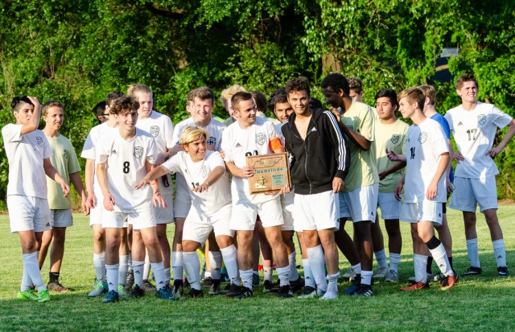
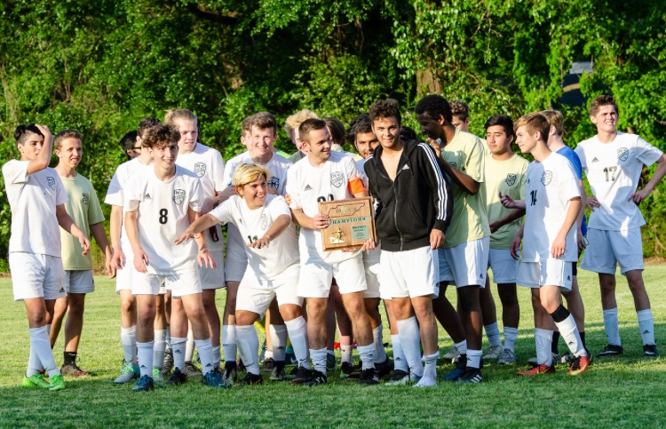
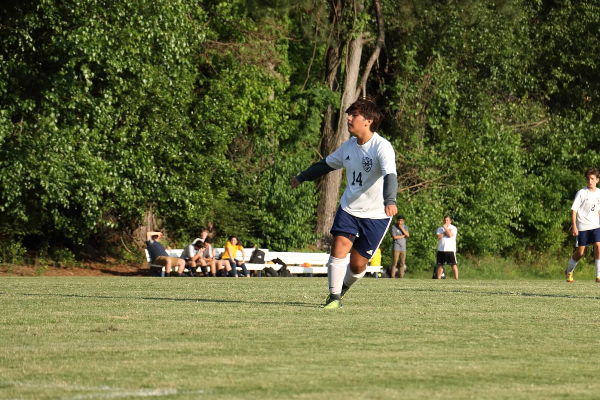
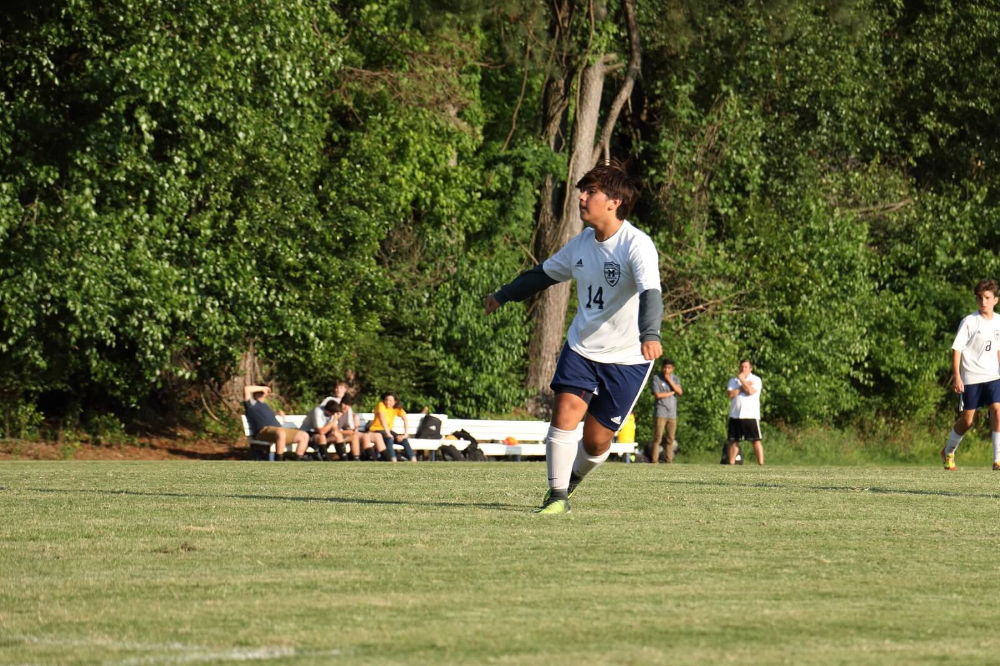

MADISON ACADEMIC SOCCERMADISON ACADEMIC SOCCER
MADISON ACADEMIC SOCCERMADISON ACADEMIC SOCCER 



 


.png)


Madison went to the Regional Championship full of confidence as they played rivals TCA for the third time this season. Once again the Mustangs came out on top to get a 100% record against TCA this season with a scorline of 2-0 to crown themselves Regional Champions.
The Madison Mustangs defeat rivals TCA for the second time this season to win the District Championship by a score of 2-0.

The Mustangs played Chester County in the District Semifinal on Tuesday and came out with a great 3-1 result for a chance at winning the District Tournament against rivals TCA. David Weissenfluh scored a fantastic volley from a rebound after a well struck corner kick by Edward Havercamp.
Benito Rodriguez is a Senior at Madison and will be playing his 4th and final season with the Mustangs. Benito was asked about what his goals for the season were as well as what he loved most about the team and this was his response. "Despite having won the District and Regional championships last year there was a sense of failure at the end of the season because we slipped at the last moment and couldn't go to state. This year we not only expect to retain our titles but also to go to State, stay focused throughout the tournament to make it to the final and God willing win the tournament, it would be a dream come true to end my high school career as State Champion. I love this team and this badge as well as how everyone here is a family and we always support each other. The banter is always great and the team spirit is as well. It has been a fantastic experience to be part of this team and I expect to end it on a high note."
Joseph Soriano is a Senior at Madison who has played every year of his high school career. Joseph was asked what his goals for the upcoming 2018/2019 season as well as what he loved the most about the team and this was his response. "My goal for the season is to make our first state appearance in 3 years. What I love most about the team is how close everyone is and noo matter how hard the workout is, we just do it!"
Matthew Steen is a Senior at Madison and he has played for the Mustangs since his freshman year. This is what he had to say when asked about what he loved most about the team as well as his expectations and goals for the upcoming 2018/2019 season. "My goal this year is for us to go to state. Once we reach that goal, we should transition into the goal of winning state. I love how close our team is. Everyone is friends with everyone. We are a close-knit team. This will be my fourth year playing and I can't wait to finish my senior year strong!"

Cameron Huelin is a Senior at Madison and he has played for the Mustangs since his freshman year. This is what he had to say when asked about what he loved most about the team as well as his expectations and goals for the upcoming season. "I expect to make it far in the state tournament. I've played all 4 years. I love the comradery that goes along with the sport and specifically this team."

David Weissenfluh is a Madison Academic senior this year and this is what he had to say after being asked about his goals for the season and what he loved most about the team."I started playing soccer for Madison in my sophomore year. I have strengthened and developed my ability to play the sport, with the help of my coaches and all my teammates, over the past two years. This year is different. There's a different tone, a different team, and a different coach. But what I love most about this team is the ability to adapt. We adapt to our situations and setbacks, pushing through as hard as we can in order to succeed, no matter the difficulty. If one person falls, the entire team picks him up and continues to push our way to victory. My goal for this year is to adapt to our coach and adapt to our new team, driving our way to state."

Bolaji Olasunya is a Senior at Madison and will be playing his final year of soccer after 3 years of playing for the Mustangs. This is what he said about his goals for the season and what he loved most about the team. "I expect to play at state and hopefully score 6 goals. I've played for this team for 3 years and I love our energy."
Contact Info
Coach Israel Siller
Email: Israel.siller08@gmail.com
Team Email: madisonacademicsoccer@gmail.com